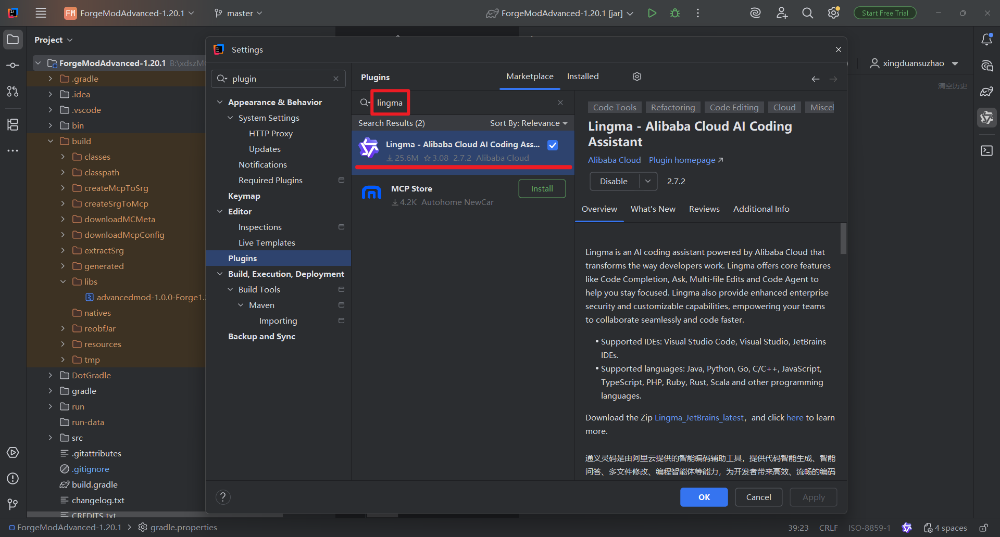
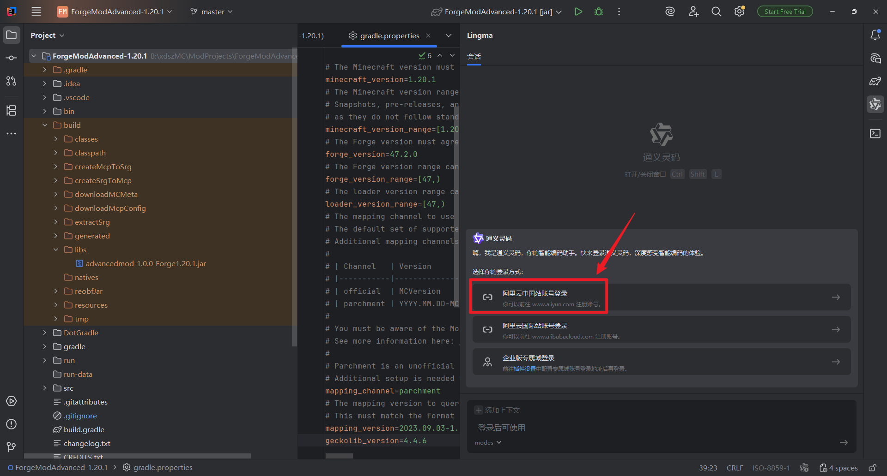
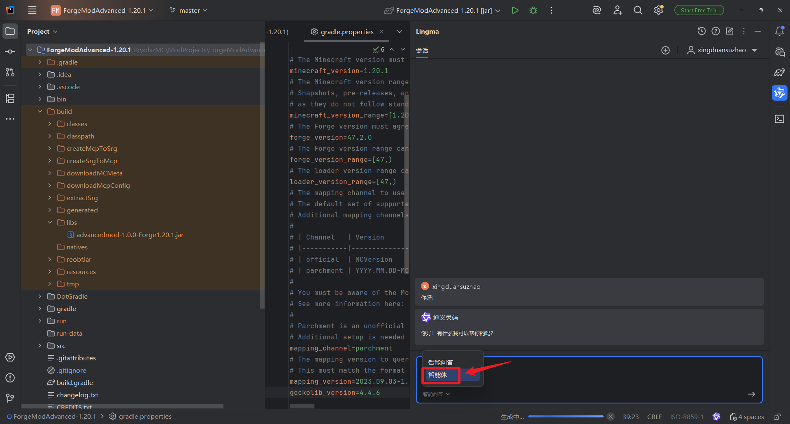

AI 辅助 Minecraft 模组开发
先跑通，再提效 —— 适合想从零开始做模组的人
每一步只解决一个明确问题，点击卡片展开查看，读完就能往下做。
千问AI接入指南
从 IDE 配置到基础使用，帮你把 AI 编程环境先接入成功，避免一开始卡在工具层。
10分钟搭好AI编程环境
只需三步，即可在IDE中接入AI编程助手（通义灵码 Lingma），开始AI辅助模组开发。
Step 1：安装Lingma插件
打开 IntelliJ IDEA → Settings → Plugins，搜索 "Lingma"，安装通义灵码插件后重启IDE。

Step 2：登录阿里云账号
在Lingma面板中点击登录，选择 "阿里云中国站账号登录"，使用支付宝或阿里云账号即可。

Step 3：开始使用
登录成功后，在对话框中切换到 "智能体" 模式，输入问题即可开始AI辅助编程。

第一个AI模组 Prompt
给你一套能直接起步的模板，让你先看到"模组真的能跑起来"，而不是反复停在理论里。
这些Prompt能帮你做什么？
可以直接复制使用的完整Prompt。粘贴到你的AI编程工具中，AI会帮你生成一个可运行的Minecraft模组——包含自定义方块、物品和合成配方。
需要先完成上面 STEP 1 的环境搭建，确保AI编程环境可用。
Prompt #1：创建模组基础框架
先用这个Prompt让AI生成模组的基础结构，包含主类、注册系统等。
你是一个Minecraft模组开发专家，精通NeoForge 1.21模组开发。 请帮我创建一个NeoForge 1.21模组的基础框架，模组ID为"mymod"，要求： 1. 创建主类 MyMod.java，使用 @Mod 注解 2. 创建物品注册类 ModItems.java，使用 DeferredRegister 3. 创建方块注册类 ModBlocks.java，使用 DeferredRegister 4. 在主类中完成所有注册的初始化 5. 代码需要兼容 NeoForge 1.21.x 请给出完整的Java代码，每个文件单独列出，并注明文件路径。 代码中加入必要的中文注释说明每个部分的作用。
Prompt #2：添加自定义物品
框架生成后，用这个Prompt让AI添加一个自定义物品。
基于上面的模组框架，请帮我在 ModItems.java 中添加一个自定义物品： 物品名称：magic_gem（魔法宝石） 要求： 1. 在 ModItems 中注册该物品 2. 设置物品属性：最大堆叠64，在创造模式物品栏中可见 3. 创建语言文件 en_us.json，添加物品的英文名称 4. 创建对应的物品模型JSON文件 5. 说明物品材质文件应该放在哪个路径 请给出需要修改和新增的所有文件内容。
Prompt #3：添加自定义方块
接着添加一个自定义方块，并设置掉落物。
继续基于当前模组，请帮我在 ModBlocks.java 中添加一个自定义方块： 方块名称：magic_ore（魔法矿石） 要求： 1. 在 ModBlocks 中注册该方块 2. 同时注册对应的 BlockItem（方块物品） 3. 设置方块属性：硬度3.0，需要铁镐以上挖掘 4. 创建方块战利品表（loot table），挖掘时掉落1~3个 magic_gem 5. 创建方块模型JSON和方块状态JSON 6. 更新语言文件 请给出需要修改和新增的所有文件内容及路径。
Prompt #4：添加合成配方
最后添加合成配方，让模组功能完整闭环。
继续基于当前模组，请帮我添加以下合成配方： 1. 有序合成：4个 magic_gem + 1个钻石 → 1个钻石剑（工作台合成） 布局： 空 宝石 空 宝石 钻石 宝石 空 宝石 空 2. 熔炼配方：magic_ore → magic_gem（熔炉熔炼，经验0.7，时间200tick） 请给出配方JSON文件的完整内容和正确的文件路径。 同时说明配方数据包的目录结构。
使用方法
- 按顺序使用：从 Prompt #1 开始，每次把AI生成的代码放到项目中后，再发送下一个Prompt
- 保持上下文：在同一个AI对话窗口中依次发送，AI会记住之前生成的代码
- 检查并运行：每步完成后运行
gradlew runClient检查是否报错 - 遇到报错？直接把报错信息粘贴给AI，让它帮你修复
AI开发避坑指南
整理高频错误和排查思路，让你在做复杂功能前，先知道哪些坑最容易反复踩。
AI辅助模组开发中最常见的 8 个坑
每个坑都给出现象、原因和修复方法。提前了解，少走弯路。
坑 1：AI生成的代码直接报错
坑 2：Mixin注入不生效或崩溃
坑 3：注册项找不到 / NullPointer
坑 4：AI对Minecraft API的"幻觉"
坑 5：Gradle构建失败
坑 6：资源文件路径写错
坑 7：AI上下文丢失
坑 8：版本混淆（Forge vs NeoForge vs Fabric）
总结：3条核心原则
每次都带上版本号、加载器类型、已有代码结构
完整报错信息是AI最好的修复线索
每写一个功能就运行测试，不要攒一堆再跑
你可以直接看运行效果、完整视频和公开代码，判断这条路线适不适合你。

这不是"传统开发不行"，而是很多人在刚开始用 AI 做模组时，确实会反复掉进下面这些坑。
- 没有先交代项目上下文，AI 一开始就在猜版本和环境。
- 一口气让 AI 做完整系统，结果输出散、改动乱。
- 报错后只会不断重试，不知道该贴哪些日志和代码。
- 材质和代码都临时现想，长期做下来效率不稳定。
- 先锁 Context，再按任务类型调用对应模板或 Skill。
- 先类结构、再核心逻辑、再注册和资源，逐步推进。
- 报错时切换到 Debug 流程，优先定位
Caused by和关键堆栈。 - 把高频资产整理成可复用模板，后面每次开发都更顺手。
主要来自视频评论区和交流群。
你已经跑通了第一个模组。但当功能开始变复杂——
- 每次开新功能都要重新写一遍上下文，AI才能理解你的项目。
- Entity、Mixin、DataGen 这些复杂功能，不知道怎么拆给 AI。
- AI 画的材质不是糊就是脏，16x16 像素根本控不住。
- 不确定该选什么 AI 工具，试了几个又换来换去。
- AI 编程工具额度用着用着就没了，开发被迫中断。
- 每个开发场景有对应的 Skill，一键调用，不用每次重新组织。
- 12 个实战 Skill 覆盖从方块物品到世界生成的核心场景。
- 专门的材质生成方案，通过伪像素降维法解决贴图质量问题。
- AI 工具选型矩阵，按场景标注推荐度，一张表做完决策。
- 附带额度续航方案，理论上可以实现无限续航。
两大模块覆盖「代码开发」和「材质生成」，打开导览即可按需使用。
📖 一站式导览
打开即用。AI 基础概念、工具选型、工作模式、实战技巧、安装指引全部整合在一个页面里。不用翻文件夹。
🔧 AI 工具选型矩阵
按编辑器、网页、命令行、材质四大场景整理主流 AI 工具，标注推荐度和网络要求，帮你快速做出选择。
⚡ 额度续航方案
多账号聚合代理的完整部署教程。理论上可以实现 AI 编程工具额度无限续航。
💻 AI 写代码
12 Skills + 6 文档方块与物品、实体与生物、界面与交互、事件处理、Mixin 注入、GeckoLib 动画、DataGen、网络通信、世界生成等核心场景，每个 Skill 都是独立可复用的任务模板。
配套参考文档：Context 模板、开发流程 SOP、Debug 排查流程、跨版本工具矩阵。
🎨 AI 画材质
1 Skill + 2 文档通过「伪像素降维法」解决 AI 直接生成 16x16 贴图容易糊、脏、细节失控的问题：先生成伪像素大图，再缩到目标尺寸。
包含通用前置提示词模板和分类型材质模板，适合食物、矿石、工具、容器等常见类型。